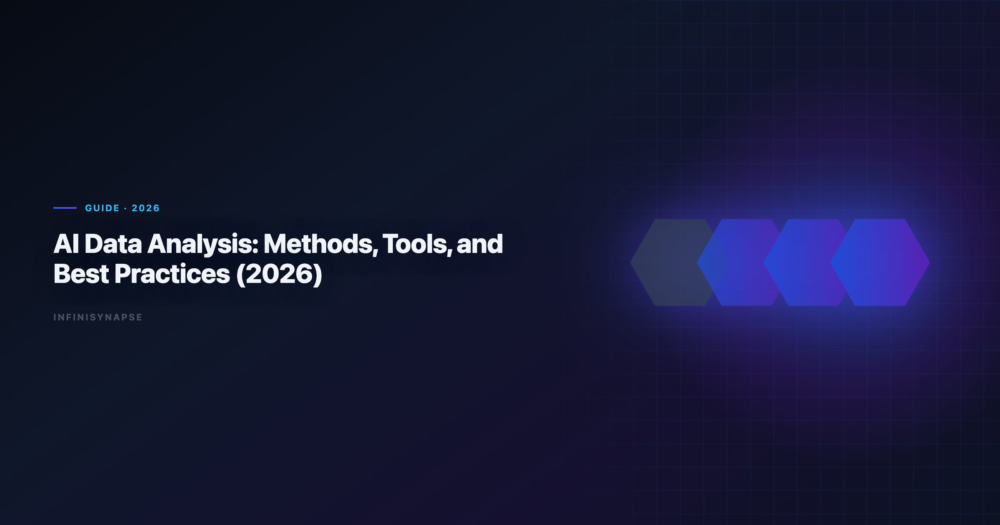
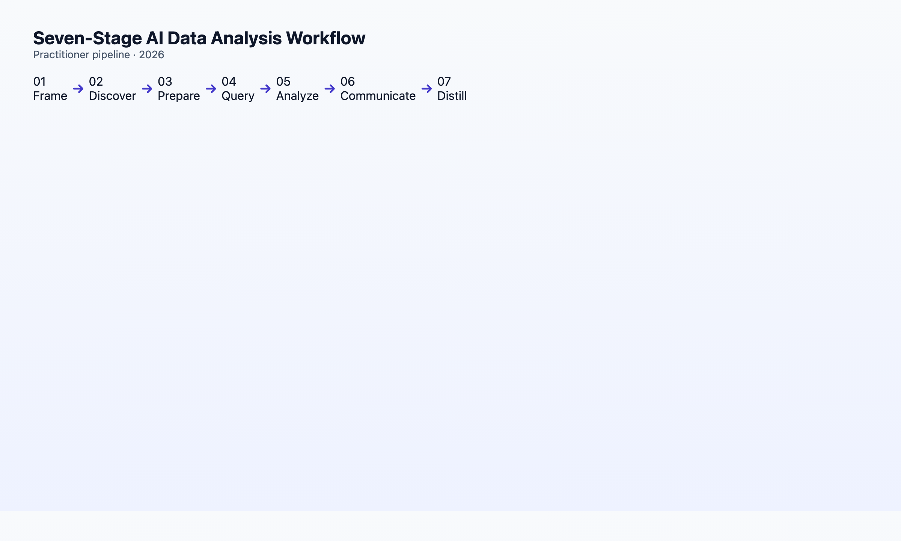

AI Data Analysis: Methods, Tools, and Best Practices (2026)
By the InfiniSynapse Data Team · Last updated: 2026-06-08 · We build an AI-native data analysis platform; this guide synthesizes methods, tools, and workflows from 18+ months of production agent deployments and Q1–Q2 2026 benchmarks.

Analysts wiring Native into production reviews can follow the parallel walkthrough in What Is an AI-Native Data Platform? (2026 Buyer's….
Table of Contents
- TL;DR
- Five Core Analysis Methods AI Automates
- The 2026 Tool Landscape
- End-to-End Workflow: Seven Stages
- Best Practices That Survive Production
- AI-Enabled vs AI-Native: Which Workflow?
- Industry Patterns
- Measuring Success
- Common Failure Modes
- FAQ
- Conclusion
TL;DR
AI data analysis in 2026 spans five methods — descriptive, exploratory, diagnostic, predictive, and prescriptive — executed through two workflow paradigms: AI-enabled copilots (one instruction at a time) and AI-native agents (one goal, autonomous multi-step execution with memory). The highest-volume use cases today are descriptive and exploratory work on structured data; the highest-ROI shift is recurring diagnostic analysis where agents compound institutional knowledge over 12 months. This guide maps methods → tools → a seven-stage workflow → production best practices.
Who this is for: analysts, data scientists, PMs, and team leads adopting AI for analytical work — whether your first question is "can ChatGPT do this?" or "how do we deploy agents at scale?". LLM-backed analytics should account for prompt-injection and data-exfiltration risks in the Google Cloud architecture framework, especially when connectors expose production schemas. Regulated rollouts often anchor access reviews to Wikipedia ETL overview when credentials, retention policies, and audit logs are in scope.
The credential, preflight, and SQL-trace pattern above also applies to this topic—see AI Data Analyst: Role, Tools, and Workflow in 2026 for source-specific steps.
What you'll learn:
- A precise 2026 definition of AI data analysis (not generic "AI for data")
- Five analysis methods and which AI tools handle each best today
- A seven-stage workflow from question framing through governance
- Seven best practices that separate pilots from production
- When to choose copilot vs data agent architecture
Scope note: This guide covers analysis execution — not dashboard design (Tableau, Power BI layout) or ML model training pipelines (MLOps). Those are adjacent disciplines.
What This Discipline Means in 2026
Key Definition: AI data analysis is the use of large language models and agentic systems to plan, execute, and interpret multi-step analytical work on structured and semi-structured data — including SQL generation, statistical computation, visualization, and narrative synthesis — with varying degrees of human oversight and automation.
Three layers matter in 2026:
| Layer | What it does | Example |
|---|---|---|
| Copilot | Assists one step | "Write SQL for monthly active users" |
| Agent | Executes a goal | "Produce the monthly KPI pack with YoY deltas" |
| Memory | Compounds across runs | "Recall April baseline; run on May data" |
The Wikipedia data quality overview documents rapid adoption of AI for knowledge work alongside trust gaps — in data analysis, trust tracks auditability and consistency, not raw accuracy.
For category definitions (augmented analytics vs AI-native), see AI-Native vs Augmented Analytics.
Five Core Analysis Methods AI Automates
| Method | Question type | AI maturity (2026) | Best tool category |
|---|---|---|---|
| Descriptive | What happened? | High — reliable | Copilot or agent |
| Exploratory | What patterns exist? | High — reliable | Copilot (files) or agent (warehouse) |
| Diagnostic | Why did it change? | Medium-high — sweet spot for agents | AI-native agent |
| Predictive | What will happen? | Medium — needs human validation | Copilot + DS tools |
| Prescriptive | What should we do? | Low-medium — judgment-heavy | Human-led, AI-assisted |
1. Descriptive analysis
Summaries, distributions, period-over-period comparisons. AI removes tedium: profiling, GROUP BY, chart selection.
Hands-on note: On a 12-table e-commerce schema, modern text-to-SQL hits correct headline metrics on the first try in ~80% of attempts in our Q2 2026 benchmark. Failures cluster around ambiguous date grains and role-playing dimensions.
2. Exploratory analysis
Pattern discovery without a fixed hypothesis. AI copilots excel on uploaded CSVs; agents excel when exploration must join warehouse tables the user does not know by name.
3. Diagnostic analysis
Root-cause and contribution analysis — why did churn spike? This is where multi-step agents pull ahead of single-turn copilots: the agent can branch hypotheses, test each, and synthesize.
4. Predictive analysis
Forecasting and classification. AI drafts features and baseline models; humans must validate leakage, stationarity, and business sense.
5. Prescriptive analysis
Optimization and decision recommendations. AI drafts scenarios; accountability stays human.
Technique-to-tool mapping with seven named products: Best AI Tools for Data Analysis in 2026.
The 2026 Tool Landscape
| Category | Paradigm | Examples | Best for |
|---|---|---|---|
| General copilots | AI-enabled | ChatGPT, Claude, Gemini | File upload, ad-hoc Python |
| Notebook AI | AI-enabled | Hex Magic, Jupyter AI | Analyst-led exploration |
| BI copilots | Augmented | Power BI Copilot, ThoughtSpot Sage | In-dashboard NLQ |
| Data agents | AI-native | InfiniSynapse, Fabric Data Agent (preview) | Recurring multi-source analysis |
| SQL specialists | Mixed | Snowflake Cortex, Databricks Genie | Warehouse-native queries |
InfiniSynapse sits in the data-agent row: InfiniAgent orchestrates goals, InfiniSQL produces named intermediate tables, InfiniRAG binds business knowledge and memory cards. Enterprise AI adoption guidance in Shopify ecommerce analytics mirrors the shift from ad-hoc copilots to repeatable, reviewable decision workflows.
Microsoft-specific comparison: Fabric Data Agent vs Copilot.
End-to-End Workflow: Seven Stages

Stage 1: Frame the question
Convert a business ask into an analytical goal. Bad: "look at the data." Good: "compare April vs May churn by cohort, same definitions as last month."
If you have memory cards, reference them by name here — see Data Agent Memory.
Stage 2: Discover data sources
Inventory tables, files, APIs. Agents do this autonomously; copilots need schema pasted.
Stage 3: Prepare and clean
Profiling, type coercion, null handling, deduplication. AI-native agents profile all columns before aggregating — the May 2026 lobster-moonlight case processed 7,444 rows × 22 fields in phase 1 of a five-minute run (case reference).
Stage 4: Query and compute
SQL, Python, or hybrid. Verify join cardinality and date semantics before production runs.
Copy-ready prompt (copilot mode):
Given this schema: [paste DDL or table list]
Question: [business question]
Requirements:
- Show SQL before executing
- Flag assumptions about NULL handling and date boundaries
- Suggest indexes if the query would full-scan
Stage 5: Analyze and interpret
Beyond charts: contribution analysis, segment comparisons, anomaly investigation. Agents chain this; copilots need stepwise prompting.
Stage 6: Communicate
Narrative + visuals + caveats. AI drafts; humans approve tone and defensibility.
Stage 7: Distill and govern
Save locked metric definitions, schema bindings, and audit links — not just a PDF. This stage separates pilots from compounding production systems.
Best Practices That Survive Production
| # | Practice | Why it matters |
|---|---|---|
| 1 | Lock metric definitions before comparing periods | Prevents "April vs May" debates caused by definition drift |
| 2 | Require audit trails for any number that reaches executives | Trust scales with provenance |
| 3 | Review SQL on production — always | AI does not know your indexes or row counts |
| 4 | Separate exploratory from recurring workflows | Copilots for explore; agents + memory for recurring |
| 5 | Run a 3-question AI-native test before agent procurement | Test details |
| 6 | Treat memory as infrastructure | Cards are assets — version, review, promote like code |
| 7 | Keep humans accountable for framing and defense | AI accelerates execution; judgment stays human |
Apache Spark documentation consistently flags governance and change management — not model accuracy — as the top barrier to production AI analytics.
AI-Enabled vs AI-Native: Which Workflow?
| Signal | Choose AI-enabled copilot | Choose AI-native data agent |
|---|---|---|
| Work pattern | One-off, exploratory | Recurring, same definitions |
| Data location | Files, ad-hoc uploads | Warehouse + multiple sources |
| User skill | Analyst drives each step | Goal submitter (PM, exec, analyst) |
| Memory need | Low | High — 12-month compounding |
| Entry points | One UI sufficient | Chat + web + API needed |
Most teams need both: copilots for speed on novel questions; agents for institutional recurring work.
Full five-pillar primer: AI-Native Data Analysis: What It Means in 2026.
Industry-Specific Patterns
| Industry | High-volume AI data analysis use case | Non-negotiable control |
|---|---|---|
| SaaS / product | Weekly retention, funnel, feature adoption | Cohort definition locking |
| E-commerce | Merchandising, basket, promo lift | Returns/exchange handling in revenue |
| Finance / fintech | Portfolio risk, compliance reporting | Audit trail per published number |
| Healthcare | Operational throughput (not diagnosis) | PHI boundaries, de-identification |
| Agencies | Client baseline packs | Tenant-isolated memory cards |
In SaaS, AI data analysis pilots succeed when product managers submit goals directly — "compare trial-to-paid by acquisition channel, same definition as Q1 board deck" — and analysts review audit trails before Slack distribution. Skipping definition locking produces the same arguments as manual SQL, just faster.
Finance teams prioritize Stage 7 (distill and govern) on day one. A AI data analysis workflow without memory cards fails regulatory follow-up when an examiner asks why March revenue differed from February's filing.
Measuring Success: KPIs for Programs
| KPI | Baseline (manual) | Target (12 mo) | Notes |
|---|---|---|---|
| Time-to-deliverable (recurring reports) | Hours | −60–80% | Memory recall drives most gains |
| Definition drift incidents / quarter | Count | −90% | Locked cards |
| Executive escalations on "wrong number" | Count | Flat or down | Audit trails reduce rework |
| Analyst hours on context re-explanation | Hours/month | −85% | See memory guide |
| Reusable analysis assets | 0 | 50–100 cards | Compounding metric |
| New hire time-to-first solo recurring report | Weeks | Days | Onboarding proxy |
Report AI data analysis ROI monthly to leadership with one recurring workflow — not aggregate "AI savings." Stakeholders trust a single traced example ("June KPI pack: 14 min agent, 12 sec human input, full audit link") more than platform-wide percentages.
Pair quantitative KPIs with qualitative trust surveys. The W3C WCAG accessibility standard shows adoption rising while trust diverges — AI data analysis programs that publish provenance weekly close that gap faster than programs that hide the agent behind a PDF.
Common Failure Modes in Pilots
1. Pilot on exploratory work only — Copilots win here; agents never compound. Start AI data analysis on a recurring report.
2. No metric-definition ceremony — Skipping Stage 1 framing guarantees Stage 6 arguments. AI data analysis without locked definitions is faster chaos.
3. Accuracy theater — Optimizing single-query benchmarks while ignoring audit trails. Executives reject AI data analysis outputs they cannot trace.
4. Tool sprawl without workflow design — ChatGPT for files, Power BI Copilot for dashboards, a third agent for warehouse — no memory layer connects them. Consolidate AI data analysis execution where distillation lives.
5. Missing human accountability — PMs submit goals; nobody reviews SQL before board meetings. AI data analysis amplifies execution; judgment stays human.
6. Buying augmented, expecting native — See AI-Native vs Augmented Analytics. Month-six disappointment is a category error, not a vendor betrayal.
Recover by resetting one workflow: lock definitions, run seven stages, distill a card, recall next month. AI data analysis compounding is visible in week five, not week one. Mature ai data analysis teams publish one traced example monthly so leadership sees evidence, not slogans.
SLO tracking for analytics agents can borrow AWS Well-Architected Framework patterns for latency, error budgets, and alert routing.
Document-store connectors should follow UK NCSC AI development guidelines for read scopes, aggregation safety, and schema discovery.
Azure-centric stacks should reference the ENISA AI cybersecurity framework when placing analytics agents beside data services.
Operational maturity for analytics agents aligns with the Wikipedia conceptual data model overview, especially around monitoring, rollback, and ownership.
Frequently Asked Questions
What is the best AI for data analysis in 2026?
There is no single best tool. ChatGPT and Claude lead for file exploration. Power BI Copilot leads for in-dashboard NLQ. Data agents like InfiniSynapse lead for recurring multi-source analysis with memory distillation. Match tool to workflow paradigm.
Can AI do statistical analysis correctly?
Yes for standard descriptive and exploratory statistics on clean data. Always verify assumptions for inferential tests. Predictive modeling requires human validation.
How do I start with analytics?
Pick one recurring monthly report, document metric definitions manually once, then pilot an agent on the same goal. Expand from one workflow, not from AI everywhere.
Is analytics the same as data science?
What skills do analysts need in 2026?
SQL literacy, metric-definition discipline, audit-trail review, and prompt/goal framing. Less manual chart formatting; more governance and judgment.
If this topic is in scope for your team, reuse the same memory-and-trace checklist in AI for Data Analysis: The Complete 2026 Guide.
How does natural language to SQL fit in?
Text-to-SQL is one capability inside the workflow — typically the query stage. Multi-step planning, cleaning, interpretation, and memory distinguish agents from SQL generators.
Conclusion
AI data analysis in 2026 is not a single tool purchase. It is a workflow design choice: copilot-accelerated sessions that reset, or agent-driven runs that compound.
Start with one recurring analysis. Lock definitions. Demand audit trails. Evaluate memory before autonomy demos. The methods and tools will keep improving; institutional knowledge is what your competitors cannot copy. Treat AI data analysis as a program with KPIs and governance — not a one-time Copilot license — and compounding returns show up in month three, not demo day.
Continue in this cluster:
| Article | URL |
|---|---|
| Best AI Tools for Data Analysis | /blog/best-ai-tools-for-data-analysis |
| AI-Native Data Analysis primer | /blog/ai-native-data-analysis |
| Data Agent Memory | /blog/data-agent-memory |
| Data Agent Glossary | /blog/data-agent-glossary |
| Natural Language to SQL | /blog/natural-language-to-sql |
Try it: InfiniSynapse — run one recurring analysis through all seven workflow stages.